Azure Networking Specialty Daily Interactive Study Report
Report date: September 6, 2026 · Current alignment: Microsoft Certified: Azure Network Engineer Associate / AZ-700.
Today’s 12 lessons
- ExpressRoute dual-stack private peering
- ExpressRoute Microsoft-peering route filters
- P2S VPN with Microsoft Entra ID
- Virtual WAN Route Maps
- Azure DNS alias records
- Application Gateway private-only frontend
- Load Balancer Floating IP
- Front Door origin locking with FDID
- Network Watcher Next Hop
- Network Watcher Topology
- Application Gateway WAF custom rules
- Azure Firewall Policy rule processing
ExpressRoute dual-stack private peering: IPv4 and IPv6 on the same circuit
Why it matters
Dual-stack private peering lets an organization introduce IPv6 over an existing ExpressRoute circuit without dismantling its working IPv4 design. The critical idea is that IPv4 and IPv6 are separate address families sharing one physical service. Each family has its own peering subnet, BGP address-family state, advertised prefixes, filtering policy, and failure evidence. A circuit can therefore be completely healthy for IPv4 while IPv6 is broken. Treating “ExpressRoute is up” as a single binary condition hides that partial-failure mode. During an IPv6 migration, the safest design preserves the known-good IPv4 path and brings IPv6 online as a parallel control and data plane that can be tested independently.
Architecture
ExpressRoute private peering uses two redundant physical connections. For IPv4 private peering, each link uses a /30 peering subnet. For IPv6, each link uses a /126. The customer edge and Microsoft Enterprise Edge establish BGP for the configured address family, then exchange private prefixes. The VNet gateway connects Azure virtual networks to the circuit, but it does not make an IPv4-only VNet magically reachable by IPv6; the VNet, subnet, workload NIC, security policy, operating system, and application must all support IPv6. This separation explains why the correct troubleshooting sequence starts with IPv6 peering state and received routes before moving to NSGs, host firewalls, DNS AAAA records, or application listeners.
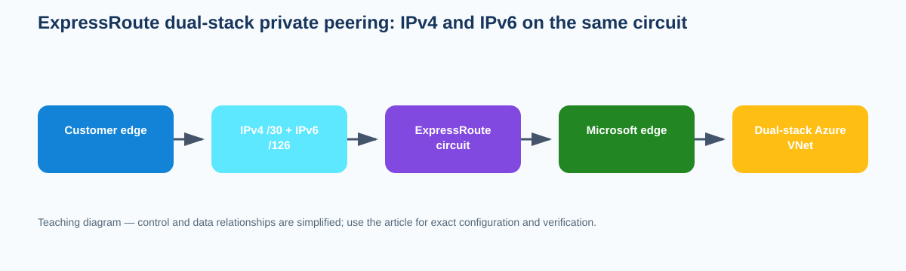
{kind=link}
Prerequisites and implementation
Start with a provisioned ExpressRoute circuit and a customer edge capable of IPv6 BGP. Reserve two unused IPv4 /30s and two unused IPv6 /126s for the redundant private-peering links; do not reuse workload address space. Confirm the VNet that will participate in the pilot already has IPv6 prefixes and that the gateway/SKU combination supports the intended configuration. Record the existing IPv4 BGP neighbors and route counts before changing anything. The CLI example creates private peering with both address families; substitute your real ASN, VLAN, and peering subnets.
az network express-route peering create \
--resource-group <rg> \
--circuit-name <circuit> \
--name AzurePrivatePeering \
--peering-type AzurePrivatePeering \
--peer-asn <customer-asn> \
--primary-peer-subnet <ipv4-primary-/30> \
--secondary-peer-subnet <ipv4-secondary-/30> \
--vlan-id <vlan-id> \
--ip-version All \
--primary-peer-subnet-v6 <ipv6-primary-/126> \
--secondary-peer-subnet-v6 <ipv6-secondary-/126>
az network express-route peering show \
-g <rg> --circuit-name <circuit> \
-n AzurePrivatePeering -o jsoncAfter the Azure side is configured, build the corresponding IPv6 BGP neighbors on both customer-edge links. Apply explicit IPv6 prefix filters rather than permitting an unrestricted global table. For a staged enterprise migration, advertise only one pilot on-premises aggregate and connect one dual-stack development VNet first. Verify the received Azure IPv6 prefixes before publishing AAAA records. This sequence separates routing readiness from DNS and application readiness. If the application works by IPv6 literal but fails by hostname, ExpressRoute is no longer the first suspect; investigate DNS and application binding. If IPv6 BGP never establishes while IPv4 stays established, leave IPv4 untouched and focus on the /126 addressing, address-family activation, ASN, VLAN, and CE interface configuration.
Capacity and routing policy deserve the same attention as neighbor state. Capture IPv4 and IPv6 route counts separately and alert on each. Decide whether IPv6 summaries will be advertised from the data center or whether more-specific prefixes are required. Avoid accidentally redistributing an Internet-learned IPv6 default or global table into private peering. On the Azure side, confirm that network virtual appliances and firewalls in the path have IPv6 rules and routes; an IPv4-only inspection appliance creates an application failure even when ExpressRoute IPv6 BGP is correct. Likewise, verify the return path from Azure to the on-premises IPv6 source rather than only testing outbound reachability.
Verification
az network express-route peering show -g <rg> --circuit-name <circuit> \
-n AzurePrivatePeering \
--query "{state:state,ipv4:primaryPeerAddressPrefix,ipv6:ipv6PeeringConfig.primaryPeerAddressPrefix}" -o json{"state":"Enabled","ipv4":"192.0.2.0/30","ipv6":"2001:db8:100::/126"}
CE IPv4 BGP: Established
CE IPv6 BGP: Established
Received Azure IPv6 prefix: 2001:db8:500::/56The important proof is not merely state=Enabled. Both IPv6 BGP sessions should be Established, the expected Azure IPv6 prefixes should be present, and a pilot workload should have a valid return route.
Troubleshooting
az network express-route peering show -g <rg> --circuit-name <circuit> -n AzurePrivatePeering -o jsonc
# On the CE, inspect IPv6 BGP neighbor state and received routes.Azure peering state: Enabled
IPv4 BGP: Established
IPv6 BGP: Idle
IPv6 routes received: 0This is an IPv6 control-plane problem, not an ExpressRoute-wide outage. Compare the /126 addresses on both ends, verify IPv6 is enabled on the subinterface, confirm the neighbor ASN, and ensure the IPv6 address family is activated. If BGP becomes Established but the application still fails, inspect the VNet IPv6 route, NSG/NVA IPv6 policy, host listener, and return path in that order.
ExpressRoute Microsoft peering route filters: receive only the service prefixes you intend
Why it matters
Microsoft peering gives an enterprise a private ExpressRoute path to eligible Microsoft public services, but the BGP neighbor alone does not define which service prefixes arrive. Route filters subscribe the peering to selected Microsoft BGP service communities. This is important both for security and for routing scale. A customer that needs only a limited service set should not blindly accept every eligible Microsoft prefix, and a healthy Microsoft-peering session can legitimately receive zero service routes when no route filter is attached. Operationally, the filter is therefore part of the routing control plane, not an optional documentation artifact.
Architecture
Microsoft groups public-service prefixes into service communities. A route-filter resource contains Allow rules referencing one or more of those communities and is associated with the ExpressRoute circuit’s MicrosoftPeering object. When a community is added, its prefixes are advertised over the existing BGP session; when removed, the prefixes withdraw even though the neighbor can remain Established. This distinction matters during incidents: “BGP is up” proves only the transport/control relationship, while the filter association and community list determine useful route content. Internal route policy then decides whether those learned Microsoft prefixes are preferred over ordinary Internet paths and how far they propagate into the enterprise.
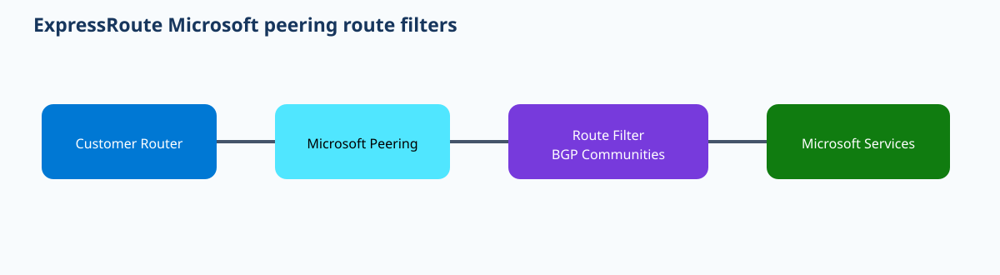
{kind=link}
Prerequisites and implementation
Microsoft peering must already be configured with appropriate public peering IPs, ASN, and authorized customer prefixes. Before creating a filter, enumerate the current Microsoft service-community catalog and document which communities the business requires. Check the route capacity of the customer edge because a single community may represent many prefixes. If Microsoft 365 communities are required, ensure the organization is authorized for that ExpressRoute use case. The implementation below first discovers communities, creates a filter and rule, then attaches the filter to the Microsoft peering.
az network route-filter rule list-service-communities -o table
az network route-filter create -g <rg> -n <filter>
az network route-filter rule create \
-g <rg> --filter-name <filter> \
-n AllowSelected --access Allow \
--communities <community-1> <community-2>
az network express-route peering update \
-g <rg> --circuit-name <circuit> \
-n MicrosoftPeering --route-filter <filter>Treat every community edit as a route-policy change. Before adding a community, capture the number of Microsoft prefixes received and the next hop for representative destinations. After the edit, confirm that new prefixes are actually present and that the internal network does not unexpectedly redistribute them everywhere. Many enterprises keep these public-service routes at WAN edges and use carefully controlled propagation rather than installing thousands of additional prefixes on every campus router. If the business intends ExpressRoute only for selected Microsoft services, test an unselected service and verify it still follows the ordinary Internet path.
Route-filter removal is also traffic-affecting. Detaching the filter can withdraw Microsoft service prefixes even while the BGP session remains established. A good rollback design therefore verifies that the Internet path is available for critical services before reducing the filter. Firewalls and proxies can also become the next bottleneck after routes appear: the filter controls what Microsoft advertises, but it does not add security policy or change application DNS. If a selected prefix is learned but an application still fails, prove the route next hop and firewall policy before changing the filter again.
For ongoing operations, record both the human-friendly service names and the community values used by the filter. Re-run the service-community discovery command during change preparation instead of copying values from an old runbook. Monitor received-route count and BGP state separately: a sudden route-count drop with an Established neighbor strongly suggests policy/filter changes, whereas a down neighbor indicates a different failure layer. That distinction makes route filters a useful teaching example of why adjacency health and route content are separate observability signals.
Verification
az network route-filter show -g <rg> -n <filter> -o jsonc
az network express-route peering show -g <rg> --circuit-name <circuit> \
-n MicrosoftPeering --query "{state:state,routeFilter:routeFilter.id}" -o json{"state":"Enabled","routeFilter":".../routeFilters/ms-services"}
Customer BGP neighbor: Established
Selected service communities: advertised
Representative selected prefix: learned via ExpressRouteSuccess means the filter is attached, the intended communities exist in its rule, the BGP session is healthy, and representative service prefixes are present.
Troubleshooting
az network route-filter rule show -g <rg> --filter-name <filter> -n AllowSelected -o jsonc
az network express-route peering show -g <rg> --circuit-name <circuit> -n MicrosoftPeering -o jsoncMicrosoft peering: Enabled
BGP: Established
routeFilter: null
Received Microsoft service routes: 0The neighbor is not the problem. Attach the intended route filter, then verify the selected community list and received routes. If the filter is attached but one service is missing, compare its current community returned by list-service-communities with the filter rule. Do not alter customer advertisements or the ASN to solve a missing subscription community.
Point-to-Site VPN with Microsoft Entra ID: identity-backed OpenVPN remote access
Why it matters
Point-to-Site VPN with Microsoft Entra ID ties remote-access admission to user identity rather than relying only on a distributed certificate. Users authenticate through the Azure VPN Client, while the network tunnel uses OpenVPN to the VPN Gateway. This creates a useful separation: identity determines whether the user can establish the session, and normal Azure routing/security controls determine what the assigned VPN client address can reach afterward. A successful Entra sign-in does not repair an overlapping client pool, absent route, incorrect DNS suffix, NSG deny, or application firewall. Understanding those layers prevents authentication errors and data-plane errors from being mixed together.
Architecture
The VPN Gateway is configured with an OpenVPN tunnel type and Microsoft Entra authentication values: tenant, audience, and issuer. The user starts the Azure VPN Client, authenticates to Entra ID, and establishes the encrypted tunnel. The gateway assigns an IP from the P2S client address pool and the downloaded profile supplies routes and connection parameters. Microsoft documents that one Audience value is supported on the gateway at a time; that becomes important during application-ID migrations. The client pool must not overlap the VNet or on-premises prefixes reachable through the gateway, otherwise route selection becomes ambiguous before any NSG is evaluated.
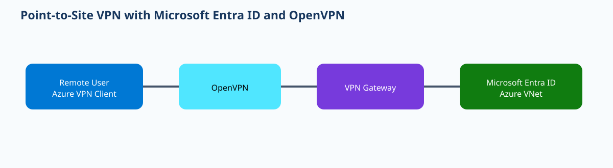
{kind=link}
Prerequisites and implementation
Use a route-based VPN Gateway SKU that supports P2S OpenVPN and Entra authentication. Allocate a unique P2S client pool, identify the Entra tenant ID, and use the current Microsoft-documented Azure VPN Client audience/application ID for the target cloud. The safest automation pattern is to configure the gateway with Azure CLI or PowerShell and then download/import the current client profile rather than hand-editing XML copied from another tenant.
az network vnet-gateway update \
-g <rg> -n <vpn-gateway> \
--client-protocol OpenVPN \
--address-prefixes <p2s-client-cidr> \
--aad-tenant <tenant-url> \
--aad-audience <azure-vpn-client-audience> \
--aad-issuer <issuer-url>
az network vnet-gateway vpn-client generate \
-g <rg> -n <vpn-gateway> \
--authentication-method EapTlsBecause CLI parameter availability evolves, verify the installed Azure CLI help against the current Microsoft how-to before production use, especially for Entra-specific authentication fields and profile generation. The architectural intent remains stable: OpenVPN is the tunnel, Entra ID is the user-authentication authority, and the P2S pool is the source network used by subsequent routing and policy. If you enforce Conditional Access or MFA, test the end-user workflow with the exact Azure VPN Client platform and tenant configuration used in production.
After the tunnel forms, inspect the client routing table. The profile may need to be regenerated after gateway routing changes so clients receive updated routes. For split-tunnel designs, only Azure/on-premises prefixes should enter the VPN; ordinary Internet traffic remains local. If forced tunneling is intentionally used, validate DNS and Internet egress separately because the user experience changes significantly. For hybrid name resolution, make sure VPN clients receive DNS servers that can resolve both Azure private zones and on-premises domains. Authentication success alone does not prove that the client is using the intended resolver.
An enterprise rollout can begin with one test group and a dedicated client pool. Confirm the user can sign in, receives an address, learns the expected routes, resolves an internal name, and reaches a representative TCP service. Then test a disabled user or denied Conditional Access case to ensure identity controls fail closed. Also test a network-layer denial: keep the user authenticated but block one destination with NSG or firewall policy. These two negative tests teach operators to distinguish “authentication failed before tunnel establishment” from “tunnel is connected but traffic policy denied the flow.”
Keep migration dates in view. Microsoft has documented retirement timelines for older manually registered Azure VPN Client application IDs in the public cloud. A gateway supports one Audience value, so migrating the audience is a coordinated client-impacting event rather than something to change casually. Regenerate profiles and validate a pilot before changing broad populations.
Verification
az network vnet-gateway show -g <rg> -n <vpn-gateway> \
--query "{state:provisioningState,protocol:vpnClientConfiguration.vpnClientProtocols,pool:vpnClientConfiguration.vpnClientAddressPool.addressPrefixes,audience:vpnClientConfiguration.aadAudience}" -o json{"state":"Succeeded","protocol":["OpenVPN"],"pool":["172.20.100.0/24"],"audience":"<expected-client-id>"}
Azure VPN Client: Connected
Assigned client IP: 172.20.100.10
Route to 10.50.0.0/16: via VPN interfaceTroubleshooting
az network vnet-gateway show -g <rg> -n <vpn-gateway> -o jsonc
# On client: inspect Azure VPN Client logs, assigned IP, routes, and DNS servers.Client authentication: succeeds
Tunnel status: Connected
Assigned IP: 172.20.100.10
Route to 10.50.0.0/16: absentThis is no longer an Entra authentication problem. Regenerate/import the current VPN profile and verify gateway route propagation. If the route exists but traffic is denied, use Network Watcher/NSG/firewall evidence for the P2S source pool. If the client cannot authenticate at all, compare tenant, audience, issuer, account authorization, and Conditional Access before touching routes.
Virtual WAN Route Maps: filter, summarize, and tag routes at connection boundaries
Why it matters
Virtual WAN provides managed transit, but large enterprises still need routing policy. Route Maps add policy at connection boundaries so operators can modify which routes enter or leave a virtual hub and change attributes such as communities or AS path. This solves a different problem from routing intent: routing intent steers classes of traffic toward security solutions, while Route Maps manipulate route advertisements themselves. The feature is especially useful when branches, ExpressRoute circuits, and virtual network connections require different route policy without replacing the managed hub router with a customer-managed route reflector.
Architecture
A Route Map contains ordered rules. It is applied to a virtual hub connection in the inbound direction, outbound direction, or both. Inbound processing acts on routes as they enter the hub from that connection; outbound processing acts on routes the hub is preparing to advertise back to the connection. Microsoft documents one Route Map per direction per connection. Matching can use route attributes and prefixes, while actions can drop routes, modify community, alter AS path, or summarize prefixes depending on the rule. Unmatched routes are allowed by default unless policy explicitly drops them, so operators must understand both matches and the implicit behavior.
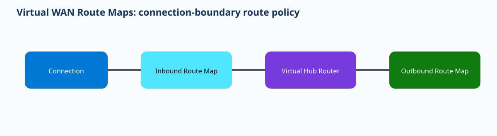
{kind=link}
Prerequisites and implementation
Use a Standard Virtual WAN with a virtual hub and existing branch, ExpressRoute, or VNet connections. Define the policy objective first: filtering, tagging, path preference, or summarization. Avoid using a summary merely to reduce route count without checking that the hub actually has reachability to every component prefix. Microsoft notes that aggregation can remove attributes such as AS path and community from the resulting summary, so document those consequences before using it as a scale mechanism.
# Inspect available route-map CLI surface for the installed extension.
az network vhub route-map --help
# Create a route map, add ordered rules, then associate it with a
# connection in inbound and/or outbound direction using the current
# Microsoft-documented CLI/ARM interface.
az network vhub connection show \
-g <rg> --vhub-name <hub> -n <connection> -o jsoncRoute Maps are a case where the exact CLI/extension syntax can evolve, so the implementation should be built against the current Microsoft reference rather than inventing parameters. In infrastructure-as-code, model the route-map object and its connection association together so a policy cannot be created but accidentally left unapplied. Use separate names that describe direction and intent, such as branch-in-tag-east and branch-out-filter-default. That makes troubleshooting easier than generic names like rm1.
Consider a hub receiving hundreds of branch prefixes over VPN. The enterprise wants to tag routes from a regulated branch group with a community on inbound processing, then use downstream policy to distinguish them. A second outbound Route Map removes a default route from one partner connection while allowing specific application prefixes. Test each direction independently: first inspect routes the hub learns from the connection, then inspect routes advertised back. Because outbound maps are applied after the hub has selected routes, a route absent from the hub’s effective table cannot be created by an outbound map.
Summarization requires special caution. A summary can reduce routing scale but can also attract traffic for a component network that is not actually reachable. Before enabling a summary, inventory all more-specific prefixes and confirm the receiving side has a valid route back. If the summary causes traffic blackholing, restore the component advertisements rather than changing unrelated security policy. For community or AS-path manipulation, capture the route attributes before and after so operators can prove the policy action instead of merely observing that “traffic changed.”
Route-map changes can alter large portions of the network quickly. Stage them on one connection, export route tables before and after, and define a rollback that removes the association or restores the previous map. Use consistent rule priorities and avoid broad early rules that make later rules unreachable. This mirrors firewall policy engineering: order and match specificity matter.
Verification
az network vhub connection show -g <rg> --vhub-name <hub> -n <connection> -o jsonc
# Use Virtual WAN effective-route/advertised-route views to compare
# prefix, next hop, AS path, and community before/after the map.Connection provisioningState: Succeeded
Inbound route map: branch-in-tag-east
Outbound route map: branch-out-filter-default
Learned 10.20.0.0/16 community: <expected-tag>
Default route advertised to partner: absentTroubleshooting
Route Map resource: Succeeded
Connection inboundRouteMap: null
Routes show original communities unchangedThe policy exists but is not associated with the connection. Attach it in the intended direction and recheck effective/advertised routes. If the association exists but a rule does not match, inspect the exact prefix/attribute match and rule order. If a summary created a black hole, verify the component prefixes and next hops rather than changing application or NSG policy.
Azure DNS alias records: bind DNS lifecycle to Azure resources
Why it matters
Normal DNS A and AAAA records contain literal addresses. When the backing Azure resource is recreated or its public IP changes, those records can become stale unless automation updates them. Azure DNS alias records instead point a record set at an Azure resource. Azure then resolves the alias using the resource’s current address. This is useful for apex-zone aliases and for reducing DNS drift during infrastructure lifecycle events. It does not eliminate TTL/caching behavior or make an unhealthy resource healthy; it only couples the DNS record to a supported target resource.
Architecture
The Azure DNS zone contains an alias record set rather than a literal IP value. The alias references a supported Azure resource ID, such as a Standard public IP or another supported endpoint. When a resolver queries the name, Azure DNS returns the address associated with the current target. Because the resource relationship is held in Azure control-plane metadata, replacing the target can be handled by updating the alias target rather than editing a literal A record. The DNS client still sees an ordinary DNS answer and caches it according to the record TTL.
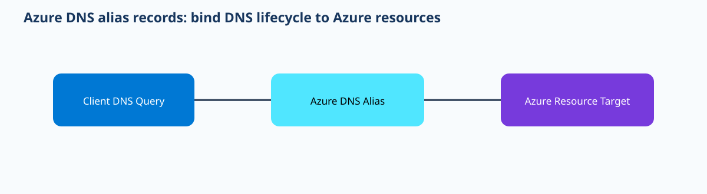
{kind=link}
Prerequisites and implementation
Create an Azure Public DNS zone and a supported target resource. The most straightforward demonstration is a Standard public IP. Retrieve its resource ID and create an alias record at a chosen label or zone apex. Use Terraform when you want the DNS target dependency expressed alongside the public-IP lifecycle. In CLI-driven environments, use the current Azure DNS record-set alias parameters from Microsoft’s documentation; do not substitute a literal address if the purpose of the lesson is to preserve resource coupling.
az network public-ip show -g <rg> -n <public-ip> --query id -o tsv
# Example Terraform relationship:
resource "azurerm_public_ip" "app" {
name = "pip-app"
location = var.location
resource_group_name = var.resource_group
allocation_method = "Static"
sku = "Standard"
}
resource "azurerm_dns_a_record" "app" {
name = "app"
zone_name = azurerm_dns_zone.public.name
resource_group_name = var.resource_group
ttl = 60
target_resource_id = azurerm_public_ip.app.id
}The implementation value is clearest during a blue/green cutover. Suppose app.example.com currently aliases Public IP A. Build the replacement application behind Public IP B and validate it directly. Change the alias target to B and observe the DNS response after caches age out. If the old resource is later deleted, the alias relationship prevents the DNS configuration from silently continuing to contain an unrelated literal address. Still, do not delete the old endpoint before proving the new path and accounting for client TTL caches.
Alias records are not health checks. If the public IP still exists but the application behind it is broken, Azure DNS will continue returning the target address. Use Front Door, Traffic Manager, Load Balancer probes, or application monitoring when automatic health-based failover is required. Likewise, alias records do not create TLS certificates or hostname bindings. The application must still present a certificate valid for the DNS name and be configured to serve that host.
At scale, remember that Azure documents limits on how many alias record sets can target a single Azure resource. Inventory aliases when a shared public IP is reused by many names. Keep record ownership in IaC so a resource replacement updates the intended aliases consistently. For apex records, an alias can be especially useful because standard DNS CNAME semantics do not allow a CNAME at a zone apex with other required records.
Verification
az network public-ip show -g <rg> -n <public-ip> --query "{id:id,ip:ipAddress}" -o json
nslookup app.example.com
# or: dig app.example.com AAzure public IP: 203.0.113.40
app.example.com. 60 IN A 203.0.113.40
Alias target resource ID: .../publicIPAddresses/pip-appThe resolved address should match the current resource, and the Azure DNS record should retain the target resource reference rather than a manually maintained literal address.
Troubleshooting
Public IP target: 203.0.113.41
Authoritative Azure DNS answer: 203.0.113.41
Client still resolves: 203.0.113.40The alias update worked; the remaining issue is DNS caching. Check the TTL and client/recursive cache rather than repeatedly changing the Azure record. If the authoritative answer itself is wrong, inspect the alias target resource ID. If DNS resolves correctly but the application fails, move to listener, TLS, NSG, load balancer, or application diagnostics.
Application Gateway private-only frontend: Layer-7 delivery without an Internet listener
Why it matters
Application Gateway v2 can provide Layer-7 load balancing, TLS termination, health probes, and WAF for applications that should never have a public frontend. A private-only frontend is appropriate for internal APIs, line-of-business web applications, and hybrid services reached from peered VNets or on-premises networks. It avoids the common anti-pattern of assigning a public frontend and then trying to lock it down with rules when the business never required Internet exposure in the first place. The design still requires explicit routing and DNS so clients can reach the private frontend address.
Architecture
Application Gateway lives in a dedicated subnet and receives a private frontend IP configuration. A listener binds protocol, port, and optionally hostname to that frontend. Rules map listeners to backend pools and HTTP settings, while health probes decide backend eligibility. The client-to-gateway path is distinct from the gateway-to-backend path. A branch user can have no route to the private frontend even while all backends show Healthy; conversely, the client can reach the frontend while probes fail because the backend path, host header, TLS validation, or application response is wrong.
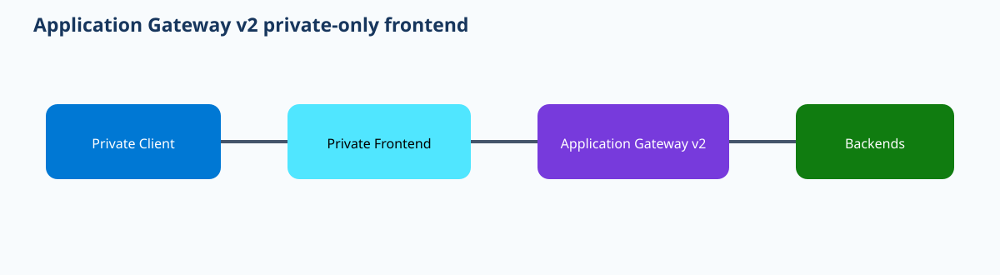
{kind=link}
Prerequisites and implementation
Create a dedicated Application Gateway subnet with enough address capacity for autoscaling. Ensure the clients have routing to that subnet through VNet peering, VPN, ExpressRoute, or Virtual WAN. Reserve a private frontend address or use dynamic allocation as appropriate. Build backend pool, HTTP settings, probe, listener, and rule together so the deployment is testable. The CLI below illustrates a private frontend during gateway creation; exact options depend on the selected SKU and backend model.
az network application-gateway create \
-g <rg> -n <appgw> -l <region> \
--sku Standard_v2 \
--capacity 2 \
--vnet-name <vnet> \
--subnet <appgw-subnet> \
--private-ip-address <frontend-private-ip> \
--servers <backend-ip-or-fqdn>
az network application-gateway frontend-ip list \
-g <rg> --gateway-name <appgw> -o tableDNS should publish an internal name that resolves to the private frontend, not directly to a backend. For hybrid users, conditional forwarding must lead on-premises resolvers to the Azure-hosted private name or authoritative internal DNS. This preserves Application Gateway as the Layer-7 policy point. If the backend expects a specific hostname, configure the backend HTTP settings and probe accordingly; a probe sent with the wrong Host header can mark a perfectly reachable server Unhealthy.
Security design must distinguish the gateway subnet from backend subnets. Backend NSGs should allow the required traffic from Application Gateway according to current service requirements while rejecting unintended direct client paths if the application should be reachable only through the gateway. WAF, when used, evaluates HTTP/S requests at the gateway; it is not a replacement for backend authentication. TLS can terminate at the gateway or be re-encrypted to backends. For end-to-end TLS, ensure backend certificate trust and hostname configuration are correct.
An enterprise scenario is an internal HR application consumed from Azure spokes and on-premises offices. Internal DNS resolves hr.corp.example to the private frontend. Branch traffic reaches the gateway over ExpressRoute, the listener terminates TLS, WAF inspects requests, and the gateway forwards to private application servers. During a failure, if branch users cannot connect but an Azure VM in the same VNet can, inspect hybrid routing to the private frontend rather than backend health. If both clients reach the listener but receive 502 responses, focus on probe/backend settings.
Verification
az network application-gateway show -g <rg> -n <appgw> \
--query "{state:provisioningState,frontends:frontendIPConfigurations[].privateIPAddress}" -o json
az network application-gateway show-backend-health -g <rg> -n <appgw> -o jsonc{"state":"Succeeded","frontends":["10.20.1.10"]}
Backend health: Healthy
Internal DNS: hr.corp.example -> 10.20.1.10
Client HTTPS response: 200Troubleshooting
Application Gateway: Succeeded
Private frontend: 10.20.1.10
Backend health: Healthy
On-prem route lookup for 10.20.1.10: no routeThis is a client-to-frontend routing failure. Fix VPN/ExpressRoute/Virtual WAN propagation or route policy rather than modifying the healthy backend pool. If the route exists but the backend shows Unhealthy, inspect probe path, host header, backend port, certificate, and NSG. If DNS points directly at a backend, correct the DNS design so clients traverse the gateway.
Azure Load Balancer Floating IP: direct-server-return address mapping and guest behavior
Why it matters
Floating IP changes how an Azure Load Balancer rule maps the frontend address to a backend flow. It is commonly used for high-availability applications that expect the load-balancer frontend address to exist locally on the selected backend, including clustered or appliance designs that reuse the same frontend port. The setting is not simply a performance toggle. It changes the packet/address model seen by the guest, which means the backend operating system or appliance must be configured to accept traffic for the frontend IP, often through a loopback or vendor-specific interface configuration.
Architecture
A Standard Load Balancer receives a flow on its frontend IP and applies the rule/backend-pool decision. With Floating IP enabled, the backend can observe the destination as the frontend address rather than a translated backend address in the usual mapping. The backend therefore must recognize that frontend IP locally. This supports direct-server-return and port-reuse patterns, but Azure still performs health probing and flow distribution. Floating IP does not synchronize application sessions across backends and does not create a cluster heartbeat. Those are workload responsibilities.
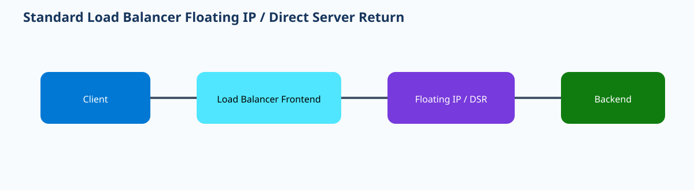
{kind=link}
Prerequisites and implementation
Use Standard Load Balancer with a frontend, backend pool, and meaningful health probe. Confirm the application or NVA vendor supports Azure Floating IP and follow its required guest loopback/weak-host configuration. Build the load-balancing rule with Floating IP enabled; do not enable it on a conventional application that expects destination NAT to the backend address without understanding the effect.
az network lb rule create \
-g <rg> --lb-name <lb> \
-n <rule> --protocol Tcp \
--frontend-port <port> --backend-port <port> \
--frontend-ip-name <frontend> \
--backend-pool-name <pool> \
--probe-name <probe> \
--floating-ip true
az network lb rule show -g <rg> --lb-name <lb> -n <rule> \
--query "{floatingIP:enableFloatingIP,front:frontendPort,back:backendPort,state:provisioningState}" -o jsonThe guest-side configuration is part of implementation, not an afterthought. On Windows clustered workloads this may involve a loopback adapter and weak-host settings; on Linux it can involve assigning the frontend address to loopback and adjusting ARP behavior; network appliances have their own documented pattern. Use the vendor or Microsoft workload guidance for the exact commands. A load-balancer rule can show Succeeded while the guest silently drops every packet addressed to the frontend IP because the operating system does not own that address.
Floating IP also affects design choices around outbound connectivity and multiple frontends. Do not assume a rule that is correct for inbound clustered traffic automatically provides deterministic SNAT for backend Internet access. Use NAT Gateway or explicit outbound rules according to the broader design. If multiple rules reuse ports across different frontends, validate the application can bind and distinguish those frontend addresses correctly.
In a database-cluster scenario, two nodes sit in one backend pool and a cluster name resolves to the load-balancer frontend. A probe identifies the active owner. The active node has the frontend address configured on loopback according to the clustering guide. When ownership moves, the probe causes the load balancer to send new traffic to the new active node. If the new node is healthy at the OS level but lacks the loopback/frontend address, users fail even though Azure’s resource configuration has not changed. That demonstrates why backend guest state is inseparable from Floating IP.
Verification
az network lb rule show -g <rg> --lb-name <lb> -n <rule> \
--query "{floatingIP:enableFloatingIP,state:provisioningState}" -o json
az network lb probe list -g <rg> --lb-name <lb> -o table{"floatingIP":true,"state":"Succeeded"}
Backend active node: Healthy
Guest loopback: frontend IP configured
TCP connection to frontend: succeedsTroubleshooting
Load-balancer rule: Succeeded
Floating IP: true
Health probe: Healthy
Guest frontend-IP loopback: missing
Application connection: timeout/resetAzure is distributing the flow, but the guest cannot accept the preserved frontend destination. Configure the loopback/weak-host or appliance-specific Floating IP behavior, then retest. If only one backend fails after failover, compare its guest network configuration with the working node before changing the load-balancer rule.
Secure Azure Front Door public origins with service tags and X-Azure-FDID
Why it matters
A public origin behind Azure Front Door can be accidentally reachable directly, allowing clients to bypass Front Door WAF, routing policy, rate controls, or global edge protections. When Private Link is not used, Microsoft recommends restricting the origin so only Front Door infrastructure can reach it and validating that the request belongs to the organization’s specific Front Door profile. These are two complementary controls: the AzureFrontDoor.Backend service tag identifies Front Door backend infrastructure, while the X-Azure-FDID header identifies the profile that forwarded the request.
Architecture
The legitimate flow is client → Front Door edge → Front Door backend infrastructure → public origin. The origin’s network access restriction allows source ranges represented by the Azure Front Door backend service tag. At the application/access-restriction layer, a header condition validates the expected Front Door ID. The service tag alone is not profile-specific; another Front Door profile also uses Front Door backend infrastructure. The FDID check narrows trust to the intended profile. A direct Internet request lacks the expected Front Door path/header and should be denied.
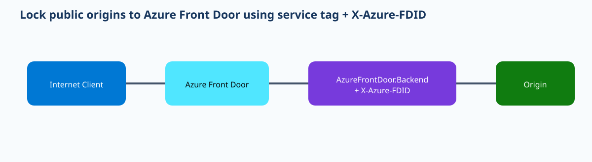
{kind=link}
Prerequisites and implementation
Identify the exact Front Door profile ID and the origin platform’s supported access-restriction mechanism. App Service, for example, can combine a service-tag restriction with an HTTP header condition. Preserve an administrative rollback path before enforcing restrictions, because a typo in the FDID can make the origin unreachable through Front Door even when Front Door itself is healthy. Apply the allow rule for Front Door before the catch-all deny and test it before disabling broad public access.
# Obtain the Front Door profile identifier.
az afd profile show -g <rg> -n <afd-profile> \
--query frontDoorId -o tsv
# For App Service, create an access-restriction rule using the current
# az webapp config access-restriction syntax with:
# service tag: AzureFrontDoor.Backend
# header: X-Azure-FDID=<front-door-id>
az webapp config access-restriction show \
-g <rg> -n <webapp> -o jsoncUse the current App Service CLI schema for the exact header-rule parameters because access-restriction command syntax evolves. The required logic is stable: permit Front Door backend service-tag traffic only when the Front Door ID header matches the expected profile, then deny unsolicited direct access. If the origin is a different service, implement the equivalent network and header validation using that platform’s controls.
Testing must include both positive and negative cases. Send a request through the Front Door hostname and expect a normal application response. Then resolve/use the origin hostname or address directly and expect denial. If direct origin access still returns 200, the bypass remains. Also test a request that reaches from allowed Front Door infrastructure but presents a wrong FDID where the platform allows such validation; it should fail the profile-specific check.
Origin health probes travel through Front Door and must satisfy the same origin access controls. A common failure is applying the service-tag allow but entering the wrong FDID, which causes Front Door probes and user requests to receive 403. That is not an origin-health or DNS problem; it is an access-rule mismatch. Conversely, if FDID is correct but the origin is unreachable, confirm the service-tag rule and origin platform network restrictions.
This design does not make the origin private. Its public endpoint still exists, but it is logically locked to Front Door. If the threat model requires no public origin endpoint at all, use Front Door Premium Private Link where supported. The service-tag/FDID approach is valuable when public-origin architecture is required or simpler, but the security boundary is enforced by origin restrictions rather than private addressing.
Verification
az afd profile show -g <rg> -n <afd-profile> --query frontDoorId -o tsv
az webapp config access-restriction show -g <rg> -n <webapp> -o jsonc
curl -I https://<front-door-hostname>
curl -I https://<origin-hostname>Front Door request: HTTP 200
Direct origin request: HTTP 403
Allowed source: AzureFrontDoor.Backend
Required header X-Azure-FDID: <expected-profile-id>Troubleshooting
Front Door origin health: Unhealthy
Front Door request: HTTP 403
Configured X-Azure-FDID: 1111...
Actual profile FrontDoorId: 2222...The request is reaching the origin but fails profile validation. Correct the header restriction to the actual profile ID. If the IDs match, inspect the service-tag source restriction and rule priority. Do not weaken the catch-all deny just to make the health probe green without understanding which allow condition is failing.
Network Watcher Next Hop: prove the route Azure selects for one destination
Why it matters
Azure routing tables can contain system routes, user-defined routes, BGP-learned routes, and peering-derived routes. Reading every route manually is useful, but during an outage the immediate question is often narrower: “For this VM and this destination IP, what next hop will Azure actually select?” Network Watcher Next Hop answers that question and returns the next-hop type, address when applicable, and route-table context. It converts a routing hypothesis into a specific control-plane decision that can then be compared with the intended design.
Architecture
The diagnostic takes a source VM/NIC and destination IP. Azure evaluates the effective routing state associated with that NIC and identifies the selected next hop. Common results include VirtualAppliance, VirtualNetworkGateway, Internet, VirtualNetwork, or None. If the result is VirtualAppliance, the returned next-hop IP should match the intended NVA. If it is None, Azure has no valid forwarding path for that destination. Next Hop is not a packet probe: it does not prove that the NVA forwards the packet, the firewall permits it, or the remote service responds. It proves Azure’s routing decision before those later layers.
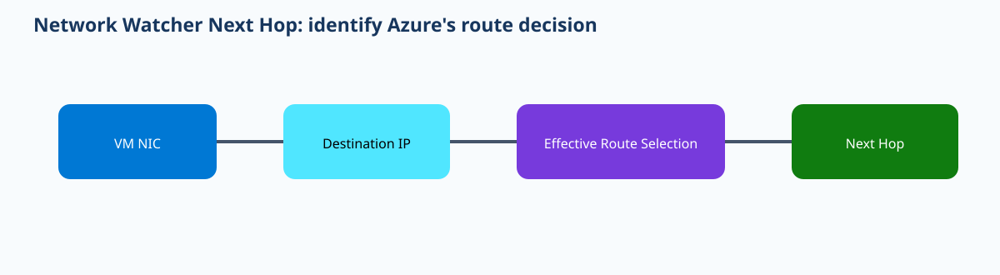
{kind=link}
Prerequisites and implementation
Network Watcher must be available for the region and the target VM/NIC must be identifiable. No new data-plane component is created. Use the exact destination IP that fails, not a nearby address or DNS name whose resolution might differ. Pair Next Hop with the effective route table when you need to understand why a particular route won.
az network watcher show-next-hop \
--resource-group <rg> \
--vm <vm-name> \
--nic <nic-name> \
--source-ip <vm-private-ip> \
--dest-ip <destination-ip> \
--output json
az network nic show-effective-route-table \
-g <rg> -n <nic-name> -o tableConsider a spoke whose default route should send Internet traffic through an Azure Firewall at 10.0.0.4. If Next Hop returns VirtualAppliance 10.0.0.4, Azure routing is doing what the architecture intended. If the connection still fails, move to the firewall session/rule/NAT layer. If Next Hop instead returns Internet, inspect the UDR association and prefix specificity. If it returns a different VirtualAppliance IP, find the route that selected that address rather than editing the firewall that traffic never reaches.
Next Hop is also useful for hybrid routes. For an on-premises destination, a correctly propagated ExpressRoute or VPN route may produce a VirtualNetworkGateway result. If a more-specific UDR diverts the same prefix to an NVA, the diagnostic shows VirtualAppliance instead. That makes it a fast way to detect route overrides. Pair it with the effective route table to compare prefix length and route source. Do not assume a BGP route “must win” merely because it is learned; Azure’s route-selection rules and more-specific prefixes still apply.
Use repeatable destination tests in change validation. Before attaching a new route table, save Next Hop results for a branch prefix, an Internet address, a peered VNet, and an inspection destination. After the change, rerun those same tests. This gives objective evidence that only intended route classes moved. For incidents, capture the result in the ticket because it prevents later confusion about what route state existed at the time.
Verification
az network watcher show-next-hop -g <rg> --vm <vm> --nic <nic> \
--source-ip 10.20.1.4 --dest-ip 8.8.8.8 -o json{
"nextHopType":"VirtualAppliance",
"nextHopIpAddress":"10.0.0.4",
"routeTableId":".../routeTables/spoke-egress"
}For a forced-inspection design, this is strong evidence that Azure will send the tested destination toward the intended appliance.
Troubleshooting
Expected: VirtualAppliance 10.0.0.4
Actual: Internet
routeTableId: nullThe NIC/subnet is not using the intended route table or no matching UDR is active. Verify subnet association and the effective-route table. Do not start with firewall rules because this flow is not routed to the firewall. If Next Hop is correct but the connection fails, move to IP Flow Verify, NVA/firewall logs, return routing, and application reachability.
Network Watcher Topology: use Resource Graph relationships as an investigation map
Why it matters
Complex Azure environments can span many subscriptions, resource groups, VNets, peerings, gateways, load balancers, NICs, NSGs, and public endpoints. During an incident, engineers often lose time simply identifying which resources belong to the path. Network Watcher Topology provides a visual relationship map derived from Azure Resource Graph so operators can discover relevant resources and navigate into diagnostics. Its value is orientation and dependency discovery, not packet-level truth. Treating it as a real-time flow trace would lead to incorrect conclusions.
Architecture
Topology queries Azure Resource Graph for network-related resources and relationships and renders them in a network view. Because it is based on resource inventory rather than live packets, it can show VNets, subnets, NICs, peerings, gateways, and connected resources even when no traffic is flowing. Microsoft notes that recent resource changes can take significant time to appear in the topology due to Resource Graph update behavior. Therefore, an absent newly created resource is not automatically evidence that deployment failed, and a displayed relationship does not prove forwarding succeeds.
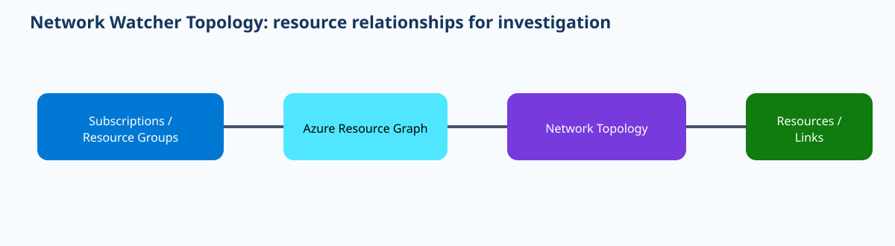
{kind=link}
Prerequisites and implementation
No inline packet agent is required. Operators need read access to the subscriptions/resources included in the topology scope. Use the portal topology experience for visual exploration, and use Azure Resource Graph/CLI queries when you need repeatable inventory evidence. The most useful implementation habit is to define a standard investigation scope and export/save the topology when documenting major network changes.
# Resource inventory supporting the topology view:
az graph query -q "Resources
| where type contains 'network'
| project name, type, resourceGroup, subscriptionId, location" -o table
# Inspect a VNet and its peerings discovered in topology:
az network vnet show -g <rg> -n <vnet> -o jsonc
az network vnet peering list -g <rg> --vnet-name <vnet> -o tableUse topology as the first map in an unfamiliar environment. If an application VM points to an internal load balancer that sends traffic through a firewall and then across a peering, topology helps identify the exact resource names and subscriptions. Once the path is known, use Next Hop for route selection, IP Flow Verify for NSG decisions, load-balancer backend health for availability, Connection Monitor for reachability, and packet capture or firewall logs when packet-level evidence is required. The topology itself should not be used to declare any of those layers healthy.
Resource Graph scope and permissions matter. A topology can appear incomplete because the operator lacks permission to one subscription or because a new resource has not propagated into the underlying graph view. Before opening a network-change ticket for a “missing” component, compare the Azure Resource Manager resource itself and Resource Graph query results. If ARM shows the resource but Resource Graph does not, wait for propagation or use direct resource diagnostics.
An enterprise can use topology snapshots during incident response. Suppose an engineer sees two VNets but is unaware that a third-party NVA VNet peers to both and has UDRs pointing at its firewall. The topology exposes the peering and NVA resources, prompting the engineer to run Next Hop and effective-route checks. That is a better use of topology than staring at a screenshot and guessing traffic direction. Exported SVGs can also be included in incident records, but note their timestamp and the potential inventory lag.
Topology is also useful after reorganizations. When resources move or old peerings should be retired, use it to identify unexpected relationships, then confirm with CLI before deleting anything. Because the view can lag, never use its absence as the only proof that a peering, NIC, or route component no longer exists.
Verification
az graph query -q "Resources | where type =~ 'microsoft.network/virtualnetworks' | project name,resourceGroup,subscriptionId" -o table
az network vnet peering list -g <rg> --vnet-name <vnet> -o tableResource Graph: hub-vnet, app-spoke, security-vnet present
Peering hub-to-app: Connected
Peering hub-to-security: Connected
Topology view: corresponding resources/relationships visibleTroubleshooting
ARM: new-vnet provisioningState=Succeeded
az graph query: new-vnet not yet returned
Topology: new-vnet absentThis indicates inventory propagation delay, not a forwarding failure. Use direct VNet/NIC/route diagnostics while Resource Graph catches up. If the resource is missing from both ARM and Graph, investigate deployment. If topology shows a connection but traffic fails, move immediately to route, security, health, or packet diagnostics because topology only proves resource relationships.
Application Gateway WAF custom rules: deterministic request matching before managed rules
Why it matters
Managed WAF rules provide broad protection, but applications often require policy that is specific to their business: blocking a known hostile IP range, allowing an administrative path only from a corporate source, rejecting a suspicious header, or rate-limiting a request pattern. Application Gateway WAF custom rules provide deterministic matching with explicit priorities and actions. They execute before managed rules, which makes them powerful but also dangerous: an overly broad early Allow can terminate evaluation and prevent a later Block or managed-rule decision from applying.
Architecture
A request reaches Application Gateway WAF. Custom rules are evaluated by ascending numeric priority. Each rule can contain one or more match conditions using variables such as remote address, request headers, URI, query string, or other supported request attributes. When a terminating action such as Allow or Block matches, processing behavior follows that action; managed rules are evaluated only when the request continues. The rule priority is therefore part of security architecture, not merely display order. Lower numbers run earlier and should normally hold the most specific or intentionally dominant policy.
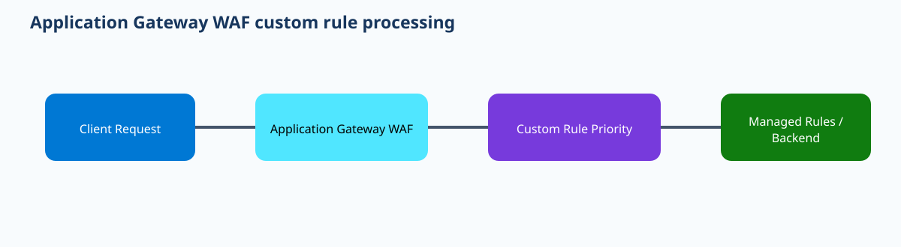
{kind=link}
Prerequisites and implementation
Use Application Gateway v2 with a WAF policy. Define the request condition and expected action in plain language before translating it into CLI. Choose priorities so more-specific rules are not shadowed by broad earlier rules. Start in Detection mode or with Log-like validation where appropriate when the condition could affect production users. The CLI has a custom-rule creation surface, with match conditions supplied in the supported JSON/argument format.
az network application-gateway waf-policy custom-rule create \
--resource-group <rg> \
--policy-name <waf-policy> \
--name BlockBadSource \
--priority 10 \
--rule-type MatchRule \
--action Block \
--match-conditions '<current-supported-match-condition-json>'
az network application-gateway waf-policy custom-rule list \
-g <rg> --policy-name <waf-policy> -o tableAlways validate the exact current CLI schema for --match-conditions before deployment rather than inventing JSON. For infrastructure-as-code, define each custom rule with a unique priority and code-review the ordering. A useful convention is to reserve priority bands: for example, 1–49 emergency/high-confidence blocks, 50–99 tightly scoped administrative allows, and higher values for broader application policy. The exact bands are organizational choices, but the point is to make order intentional.
Suppose an application has /admin and should be reachable only from a corporate NAT range. A custom Block rule for requests to /admin from noncorporate sources can enforce that policy before managed rules. Test a corporate source and an external source. If a broad AllowAllCorporate rule at priority 5 runs before a later BlockCompromisedCorporateHost rule at priority 10, the compromised host might be allowed because the first terminating rule wins. That is why priority review is a security requirement.
WAF logs should be part of verification. Record the custom rule name, action, and request correlation information. If a legitimate request is blocked, determine whether the custom rule or a managed rule caused it before adding an exclusion. Custom-rule false positives are usually corrected by narrowing their match condition; managed-rule false positives may require exclusions for a specific variable or rule ID. Do not disable the entire WAF simply because one request fails.
Custom rules are not a replacement for authentication or authorization. Blocking by IP can reduce exposure, but administrative applications still need identity controls. Likewise, a custom Allow should not be used to bypass all managed protections for a broad path unless the risk is explicitly understood. Keep rules minimal and explain the business reason for each in version control.
Verification
az network application-gateway waf-policy custom-rule list \
-g <rg> --policy-name <waf-policy> \
--query "[].{name:name,priority:priority,action:action,state:state}" -o table
curl -I https://<app-host>/<tested-path>Name Priority Action State
BlockBadSource 10 Block Enabled
Allowed test source: HTTP 200
Matched blocked source: HTTP 403
WAF log ruleName: BlockBadSourceTroubleshooting
Rule 5: AllowBroadRange -> matched
Rule 10: BlockSpecificHost -> not evaluated
Request result: HTTP 200 (unexpected)The earlier terminating Allow shadows the intended Block. Narrow the Allow condition or reorder priorities so the specific deny is evaluated first. If no custom rule matches but WAF still blocks the request, inspect the managed-rule ID and use a targeted exclusion rather than changing unrelated custom rules.
Azure Firewall Policy rule processing: collection groups, DNAT, network, and application rules
Why it matters
Azure Firewall Policy contains a hierarchy of rule collection groups, rule collections, and individual rules. When a packet is unexpectedly allowed or denied, the most useful question is not “is there an allow somewhere?” but “which earlier rule family and priority matched first?” Understanding processing order prevents a common troubleshooting mistake: adding a new rule with a lower precedence than the rule that already decides the flow. It also clarifies why inbound DNAT, Layer-3/4 network rules, and Layer-7 application rules solve different problems.
Architecture
Rule collection groups have priorities, and collections inside them also have priorities. Azure Firewall evaluates applicable policy in a defined hierarchy. DNAT rules handle inbound destination translation, network rules handle IP/port/protocol matching, and application rules provide higher-layer FQDN/HTTP(S)-oriented controls. First-match behavior means an earlier deny or allow can prevent later rules from mattering. Parent and child Firewall Policies add another policy layer that must be understood when inheritance is used. The firewall data plane applies the resulting decision to stateful sessions; return traffic for an established session is not treated as an unrelated new flow.
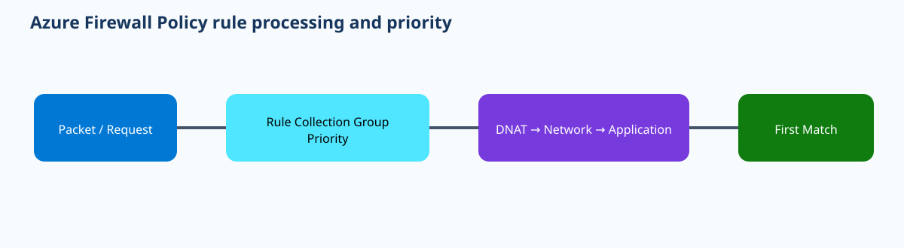
{kind=link}
Prerequisites and implementation
Use Firewall Policy attached to Azure Firewall. Before adding rules, inventory existing collection groups and their priorities. Define whether the requirement is inbound publishing (DNAT), generic L3/L4 connectivity (network rule), or application/FQDN policy (application rule). Place the rule in the correct family and choose a priority that makes its relationship to existing rules obvious.
az network firewall policy rule-collection-group create \
-g <rg> --policy-name <policy> \
-n AppEgress --priority 200
az network firewall policy rule-collection-group collection add-filter-collection \
-g <rg> --policy-name <policy> \
--rule-collection-group-name AppEgress \
-n AllowWeb --collection-priority 200 \
--action Allow --rule-type ApplicationRule
az network firewall policy rule-collection-group show \
-g <rg> --policy-name <policy> -n AppEgress -o jsoncUse the current CLI rule-add subcommand to add source addresses, protocols, and target FQDNs after creating the collection; verify its syntax in the installed CLI because application/network/DNAT rule arguments differ. In Terraform, model collection-group priorities explicitly and code-review changes that insert a lower-numbered group. A new group at priority 100 can alter flows previously matched at 300 even when the old rules are unchanged.
For inbound web publishing, create a DNAT rule that translates the firewall public IP and destination port to the private server. Do not expect an application rule to perform that translation. For outbound HTTPS, an application rule is often appropriate because it can match target FQDNs. For non-HTTP protocols, network rules may be the relevant layer. This rule-family selection is as important as the address values.
During incident response, correlate the connection tuple with firewall logs and the policy hierarchy. If logs show a deny from an early network collection, adding a later application allow will not help. If a DNAT rule is matched but the translated backend is unreachable, move from policy processing to backend routing/NSG/listener diagnostics. If no log appears for the flow at all, verify the UDR/next-hop path first; policy cannot decide traffic that never reaches the firewall.
Policy inheritance should be documented. A parent policy can contain rules that affect child firewalls. Operators looking only at the child’s local collections can miss the rule that actually matched. Maintain a merged logical view in runbooks and use descriptive collection-group names tied to functional intent. Avoid using one giant group for every application because it makes priority analysis harder.
Verification
az network firewall policy rule-collection-group list \
-g <rg> --policy-name <policy> \
--query "[].{name:name,priority:priority,state:provisioningState}" -o table
az network firewall policy rule-collection-group show \
-g <rg> --policy-name <policy> -n AppEgress -o jsoncName Priority State
Emergency 100 Succeeded
AppEgress 200 Succeeded
General 300 Succeeded
Firewall log: matched AllowWeb / action AllowThe successful resource state confirms deployment; the log match confirms that the intended collection/rule actually decided the tested traffic.
Troubleshooting
Intended allow: AppEgress priority 250
Actual log match: EmergencyDeny priority 100
Action: DenyThe later allow cannot override the earlier match. Correct the rule design or priority only after confirming the business intent. If the rule hierarchy looks correct but there are no firewall log events, run Next Hop/effective route checks to prove the source traffic reaches the firewall. If DNAT matches but the backend fails, inspect the translated destination route, NSG, and listener rather than adding another DNAT rule.
Pre-publication validation record
Lessons: 12. Required anchor sections present. Primary architecture SVGs: 12, each referenced as a full-width image on a separate row. Editable draw.io sources: 12. No Exam/Interview Takeaways or Summary sections. CLI/Terraform implementation and representative verification/failure states are included per lesson. Active 30-day ledger entries checked: 3; current lesson/source URLs and fingerprints are distinct from blocked entries.
50-question interactive quiz
Distribution: 15 Hybrid connectivity and architecture · 13 Core networking infrastructure · 10 Routing and traffic management · 12 Security, monitoring, and private service access.